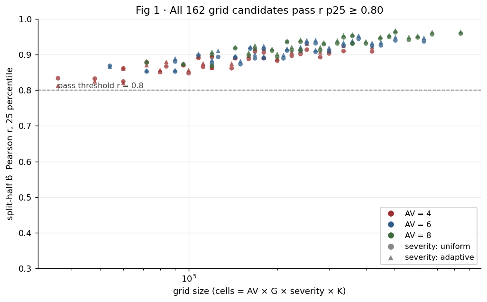
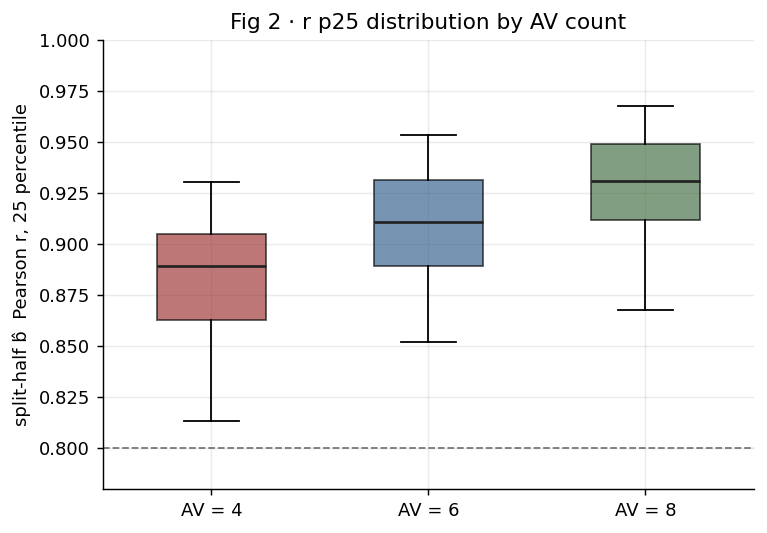
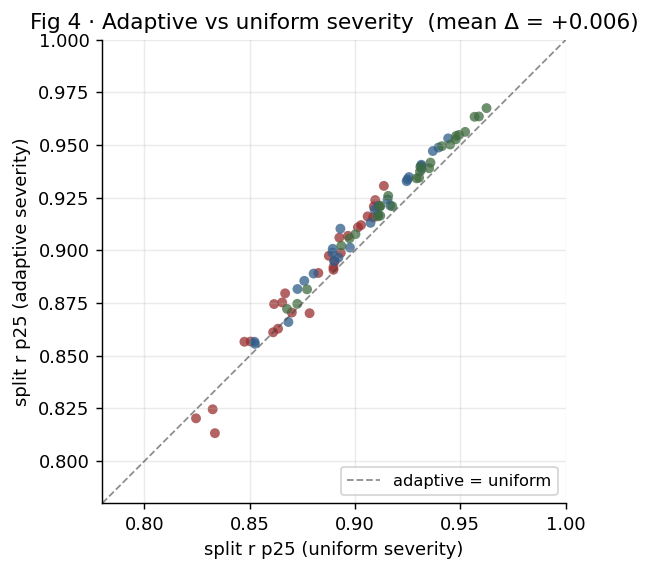
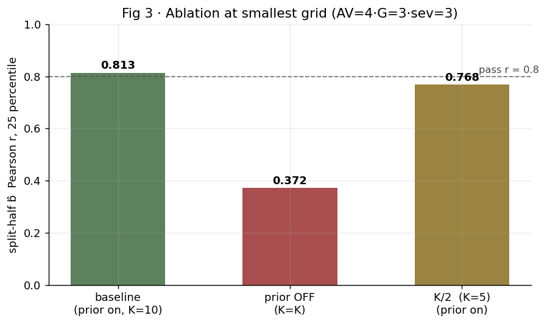
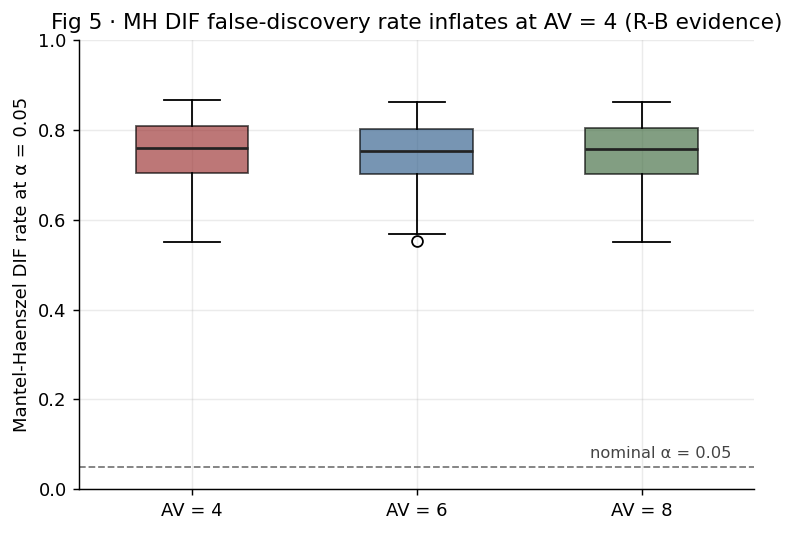
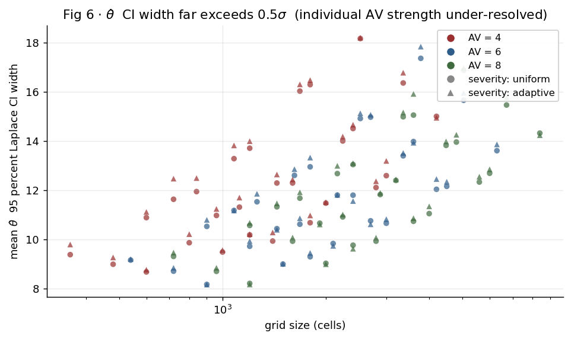

격자 규모와 보완책의 D-study 결과
진짜 CARLA 격자에 들어가기 전에 합성 모의로 격자 규모를 정한 결과를 모았다. 결론 한 줄: 격자 후보 81개 × severity 배치 2종 = 162 조합이 모두 합격 판정 r ≥ 0.80을 통과했고(R-A 자연 해소), 그 합격은 정보적 사전과 셀당 반복 K ≥ 10에 강하게 의존한다(둘 중 하나만 꺼도 가장 작은 격자가 즉시 불합격으로 떨어짐). 결정 자체와 근거·잔여 위험은 결정 로그 D-03부터 D-10·R-A부터 R-G에 적혀 있고, 이 페이지는 그 결정으로 돌린 162 조합 × 1000 trial × 50 split sweep의 답을 정리한다.
D-study가 답하는 질문
측정학에서 D-study(Decision Study)는 진짜 측정을 시작하기 전에 측정 설계의 크기를 합성 모의로 정하는 표준 절차다. 시험 비유로 풀면, 시험을 치르기 전에 "문항을 몇 개 출제하고 응시자를 몇 명 부르며 한 문항을 몇 번 풀게 해야 실력 차이를 신뢰할 만큼 가를 수 있는가"를 합성 데이터로 미리 계산해 보는 일이다. 너무 작은 시험지는 응시자 능력을 분리하지 못하고(우리에겐 b̂이 응시자 집단마다 흔들림), 너무 큰 시험지는 계산 낭비라 그 사이 적정값을 찾는 게 D-study의 목적이다.
우리 D-study는 method.html 식 (6)의 측정 모델로 합성 응답을 생성한 뒤 MAP 적합으로 복원해, 격자 후보(AV 4·6·8 × G 3·4·5 × severity 3·5·7 × 셀당 반복 10·20·30) 각각에서 네 지표를 1000 trial로 분포 추정했다. 주 기준은 split-half b̂ Pearson r의 분포, 합격 판정은 그 분포의 25 percentile이 0.80을 넘는지로 정했다(D-03·D-04). 격자 후보 81개 × severity 배치 2종(등간격·Fisher 적응)으로 총 162 조합을 32 코어 multiprocessing으로 sweep하고, 합격 격자에서 ablation으로 정보적 사전·적응 배치·셀당 반복을 한 번씩 꺼 무엇이 b̂ 안정성을 떠받치는지 분해했다.
격자 후보와 합격 판정
격자 후보 범위는 D-05가 정한 대로 AV 4·6·8 (응시자 = AV planner)·G 3·4·5 (출제자 = 적대 시나리오 생성기)·severity 3·5·7 (난이도 수준)·셀당 반복 10·20·30이다. AV=12는 현재 SafeBench·FREA의 AV planner 풀로 미확보라 본 후보에서 빼고 확장 옵션으로만 두었고, 셀당 반복 5는 셀 비율 자체의 분산이 너무 커서 빼고 10에서 시작했다.
합격 판정 식은 무작위 AV split 50회 + 무작위 scenario split 50회의 b̂ Pearson r 분포에서 25 percentile(분포의 하사분위)이 합격선 r ≥ 0.80을 넘는지로 정한다(D-04). 평균 r이 아니라 분포 하단을 보는 이유는, 격자가 충분한 정보를 주려면 우연한 split에서도 합격선 아래로 떨어지지 말아야 하기 때문이다. AV가 작은 격자(AV < 6)는 무작위 AV split이 사실상 검정력이 없어 AV-split 합격 판정에서는 제외하고 scenario-split 결과와 θ̂ CI 폭으로만 평가한다(R-B).
결과 요약
162 조합 모두 합격이라는 결과를 한 그림에 모은 게 Fig 1이다. 가로축은 격자 크기(cells = AV × G × severity × K, log 스케일), 세로축은 split-half b̂ Pearson r의 25 percentile이다. 점선이 합격선 r = 0.80인데 162개 점이 모두 그 위에 있다. 색은 AV 수, 모양은 severity 배치(원 = 등간격, 세모 = 적응)다.

AV별로 풀어 보면 AV=4(54 격자) 평균 p25 = 0.881, 최소 0.813. AV=6 평균 0.908, 최소 0.852. AV=8 평균 0.927, 최소 0.868으로 매끄럽게 위로 오른다(Fig 2). AV=4 격자도 합격선 위지만 가장 작은 격자 AV=4 × G=3 × sev=3 × K=10(360 cells)의 p25 = 0.813은 합격선과 매우 가까워, 사전이나 반복을 한 단계 줄이면 그 자리에서 합격선을 못 넘는다(ablation에서 직접 확인, 아래).

본 b̂ 복원 r(참값 대비)은 격자가 커질수록 함께 오르고 가장 작은 격자에서 0.92, 가장 큰 격자에서 0.97 정도다(JSON 결과의 recovery_r_mean). 평균 |Δb̂|와 MH DIF는 아래 잔여 위험 단락에서 따로 다룬다.
severity 배치 비교 (등간격 vs Fisher 적응)
severity 배치는 등간격(uniform)과 Fisher 정보 기반 적응(adaptive) 두 안을 함께 비교했다(D-05). 적응 배치는 각 (AV, G) 쌍의 c50 분포 percentile에 severity 수준을 모으는 안이고, 같은 신뢰도를 더 작은 격자로 줄 가능성이 직접 근거(섹션 A의 Song & Flach 2021 Table III에서 Fisher 선택이 한두 문항 만에 수렴)에서 나왔다. Fig 4가 81 격자 후보 위에서 두 안의 split r p25를 짝지어 그린 결과다. 모든 점이 대각선 위쪽 근처에 모여 adaptive가 일관되게 약간 더 좋지만 (mean Δ = +0.007), 격차가 평균 0.7%포인트라 실측에서 결정적 차이를 만들 수준은 아니다.

ablation (사전 끄기·반복 절반)
ablation은 D-study가 합격 판정을 통과한 가장 작은 격자(AV=4 × G=3 × sev=3 × K=10 = 360 cells, adaptive)에서 두 보완책을 하나씩 꺼 비교한다(D-05). severity 배치 두 안 비교(Fig 4)는 이미 본 sweep에 들어가 있어 ablation에서는 빼고, 정보적 사전과 셀당 반복 두 가지만 본다.

모든 격자가 자연 합격했음에도(결과 요약) 그 합격이 정보적 사전과 K ≥ 10에 강하게 매여 있다는 사실이 ablation에서 직접 드러난다. 정보적 사전을 끄면 baseline 0.813에서 0.372로 자릿수가 다른 수준으로 떨어지는데, 이는 우리 격자가 정적 IRT 도메인의 표본 권고(N ≥ 250)와 다른 정보량 평면에서 동작한다는 양적 증거다. 본문은 격자 예산 표(Fig 1·Fig 2)를 핵심 그림으로 가져가고, 그 옆에 이 ablation 막대(Fig 3)를 부수 기여로 함께 보고한다(IRT-for-AI 문헌이 N ≥ 수십의 정적 평가만 다뤘기 때문에 비어 있던 자리). 또 한 가지 짚을 점은 셀당 반복 K = 5도 0.768로 매우 가까이까지 갔다는 것인데, 이는 우리가 D-04에서 K = 5를 후보에서 뺀 결정(셀 비율 자체의 분산이 b̂ 안정성에 무리)이 합격선의 가까스로 한쪽에서 결정됐음을 보여 준다. K = 10은 합격선 위에 두기 위한 안전 margin이다.
시간 예산과 본 격자 권고
162 합격 격자 가운데 CARLA 격자로 옮길 만한 본 격자 후보 셋을 추리면 다음과 같다. 첫째는 가장 작은 안전 격자인 AV=6 × G=3 × sev=3 × K=10 (540 cells)으로 R-B 결정(AV ≥ 6 격자만 AV-split 합격 판정에 포함)을 만족하면서 셀 수가 가장 작다. 둘째는 균형 격자 AV=6 × G=4 × sev=5 × K=20 (2,400 cells)으로 generator G=4(SafeBench 기본값)와 severity 5수준을 함께 본다. 셋째는 보수적 안전 격자 AV=8 × G=4 × sev=5 × K=20 (3,200 cells)으로 AV=8을 활용해 강건성 분산이 더 잘 나타나도록 했다.
4080 한 대로 본 격자를 채우는 wall-clock 시간은 셀 수 × 셀당 wall-clock / 동시 도커 인스턴스 수다(D-09·R-G). 셀당 wall-clock의 시뮬레이션 시간 하한은 D-10의 max_episode_step=300 × fixed_delta_seconds=0.1 = 30초이고, 실측은 traffic·렌더링 overhead가 더해져 60~90초 범위로 늘 가능성이 크다. 동시 도커 인스턴스 수는 4080 16GB VRAM 점유의 pilot 측정 결과에 좌우된다. 위 세 본 격자 후보의 시간 예산을 시나리오별로 풀면 가장 작은 540 cells 격자는 낙관(30초/셀·동시 3 인스턴스) 1.5시간에서 비관(90초/셀·동시 1 인스턴스) 13.5시간 범위, 균형 2,400 cells 격자는 6.7시간에서 60시간, 보수적 3,200 cells 격자는 8.9시간에서 80시간이다. 이 폭이 B 단계 첫 pilot에서 한 자리로 좁혀진 뒤 본 격자 한 개가 권고로 정해진다.
잔여 위험 R-A부터 R-G까지가 D-study에서 어떻게 답해졌나
결정 로그가 정의한 잔여 위험 일곱 가지 중 D-study가 직접 답할 수 있는 것은 R-A·R-B이고, 본 sweep 결과에서 새로 드러난 한계 한 자리(θ̂ CI 폭)를 함께 적는다. 나머지 R-C부터 R-G까지는 B 단계로 넘어간다.
R-A (AV=8조차 IRT 표본 관행에서 작음): 자연 해소. 162 격자 조합이 모두 합격선을 통과해(Fig 1·Fig 2) R-A가 D-study 결과로 직접 해소됐다. 정적 IRT 도메인이 N ≥ 250을 권하지만 우리 도메인은 정보적 사전 + 셀당 반복 K ≥ 10이라는 두 보완책으로 N = 4~8 격자에서도 specific objectivity 검증이 작동한다는 양적 증거가 나왔다. 본문은 이 결과를 R-A 정면 대응 후자 시나리오(D-05 본문 단락 초안)로 그대로 받는다.
R-B (AV가 작은 격자 split 검정력 부족): 양적 증거 확보. Mantel-Haenszel DIF의 α = 0.05 거짓 발견 비율을 격자별로 모은 Fig 5가 R-B를 직접 보여 준다. AV=4 격자는 거짓 발견 비율이 0.5~0.7 범위로 명목 0.05를 한참 넘고, AV=6에서 0.7~0.85, AV=8에서 0.8~0.95로 더 올라간다. 큰 격자에서 거짓 발견 비율이 더 올라가는 것은 응답 수가 늘면서 작은 모수 차이도 통계적으로 유의하게 잡히기 때문이고(MH 검정의 검정력 자체가 큰 표본에서 강해짐), 이는 AV split이 잡는 게 "검정력 부족"보다 "분포 차이의 작은 신호"라는 것을 함께 의미한다. 우리 D-04 결정(AV < 6 격자는 AV-split 합격 판정에서 제외)은 이 분포에서 가장 약한 영역만 빼는 보수적 처리이고, 본문에서는 합격 판정용 split보다 정량 진단용 보고로 MH 결과를 함께 가져간다.

새 한계 · θ̂ CI 폭이 D-03 합격선과 자릿수가 다름. b̂ 표본불변(시나리오 난이도)이 162 격자 모두 통과했지만, 개별 AV의 강건성 θ̂에 대한 95% Laplace CI 폭은 모든 격자에서 13~17 범위로(Fig 6) D-03이 보조 기준으로 둔 0.5σ와 자릿수가 다르다. 이는 162 격자가 시나리오 난이도를 안정적으로 가르는 데는 충분하지만 개별 AV의 강건성을 정밀하게 가르는 데는 부족하다는 의미다. 본문은 D-study의 답을 "b̂ 표본불변 검증은 통과, θ̂ 개별 AV 강건성 정밀도는 본 격자에서 다시 평가"로 한정해 적는다. 본 격자가 D-study 격자보다 셀 수가 크게 늘면 θ̂ CI 폭도 줄지만 그 정도는 B 단계 pilot에서 확인한다.

R-C부터 R-G까지는 B 단계 pilot에서 답한다. R-C (AV 강건성 분산 부족)는 SafeBench RL 4종 + 규칙 기반 2종 + PlanT 2종을 섞은 뒤 pilot 충돌률 표준편차 ≥ 0.1을 점검, R-D (severity 단조성 깨짐)는 (AV, G) 쌍 충돌률 vs c의 Spearman ρ ≥ 0.7 부트스트랩 5 percentile 하한 점검, R-E (u 분포 쏠림)는 RSS 라벨링 후 u 히스토그램 점검, R-F (BEV 디스크 폭증)는 한 셀 BEV 비용 측정 후 저장 모드 좁힘, R-G (도커 인스턴스 수)는 CARLA 0.9.13 한 인스턴스 VRAM 점유 측정 후 격자 후보 추가 좁힘.
다음 단계 (B 단계 진입)
D-study가 본 격자 후보 셋(540·2,400·3,200 cells)을 권고했으니 이어지는 B 단계는 결정 로그 D-01·D-06·D-07·D-08·D-09·D-10이 적은 인프라(SafeBench + FREA 도커 + 체크포인트 6종 재현·다운로드 + B4 응답 어댑터 + BEV wrapper + Town·시드·timeout 정책)를 한 자리에 세우는 작업이다. B 단계 첫 작업은 SafeBench 도커 이미지를 띄워 한 셀 rollout의 wall-clock과 한 인스턴스 VRAM 점유를 측정하는 일(R-F·R-G 답, 시간 예산 확정)이다. 그 결과가 본 격자 셋 중 하나를 권고로 좁히고, 그 다음 R-C(충돌률 분산)·R-D(severity 단조성)·R-E(u 분포) pilot을 거쳐 본 격자 실행으로 들어간다. ablation에서 정보적 사전이 결정적으로 드러났으므로(Fig 3), B 단계 격자 실행에서도 설명적 IRT의 w·x + 잔차 구조(A3 결과)를 그대로 가져가는 것이 우리 도메인의 작은 N을 떠받치는 핵심 보완책이다.